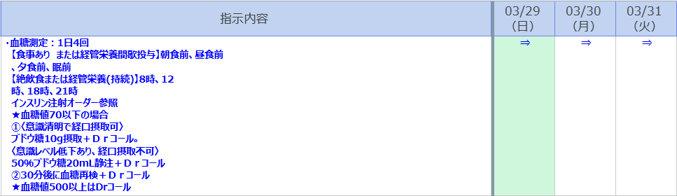

カンファレンス後の病棟業務
朝のICUカンファレンスで決まった検査・処方を入力し、手技の準備・実施、Daily Chartの記載を行います。
SECTION 1 ルーチン業務 ▶
血液検査チェック
朝の採血結果を確認し、異常値があればスタッフに報告します。
胸部写真チェック
ポータブルXPの読影を行います。気管チューブ・CVCの位置、肺野の変化を確認してください。
点滴オーダー
カンファレンスで決定した輸液・薬剤のオーダーを入力します。
内服オーダー
内服薬の継続・変更・追加をオーダーします。
コメントオーダー確認
コメントカレンダーの内容が最新の指示と一致しているか確認します。
ICU Daily Chart記載
ICUカルテはBy-systemで記載します（量が多いですが、朝回診終了時の内容でOKです）。夕方の変化はスタッフが記載しますが、その日の変化の把握・知識整理は必ず行いましょう。Daily Chartのセットは「Chart（申し送り, ICU相談）」の中にあります。
SECTION 2 ICUセット ▶
ICUのオーダーセット（点滴・内服・コメント等）の詳細は以下を参照してください。
ICUセット詳細を見る →SECTION 3 ICU入室時のTo Do List ▶
1
ICU入室時セットを展開
各種スコア入力
ICUへ患者が入室となる場合には、入室経路に応じて「外科術後入室」「ERからICU入室」「病棟からICU入室（=急変）」を選択してセット展開します。
共通事項
●Charlson Risk Index（チャールソン併存疾患指数）
.png)
●ICU入室時の患者状態情報
.png)
●ストレス潰瘍予防
.png)
●DVT予防評価
.png)
セットで異なる点
ERからICU入室
- 状態の悪い患者が救急外来や内科外来から直接，入院になることを想定したセットです
- 通常の入院に必要なオーダーやコメントを含みつつ，ICU管理に必要なオーダーに対応しています
ICU admission note
- 患者の重要なプロフィールとなりますので入室までの経緯が分かるように記入をお願いします
.png)
病棟からICU入室
- すでに一般床へ入院している患者が急変してICU入室になることを想定したセットです
- 病棟との引継ぎに重きをおきつつ，ICU管理に必要なオーダーが揃っています
To Next doctor ＆ ICU admission note
- ICU入室前に患者を担当していた医師が記入を行います
- 当直帯の入室では患者情報を内科当直が，翌日以降に入室前の受持医がProblem List以降を記入します
.png)
外科術後入室
- ハイリスク患者の術後入室を想定したセット内容です
- 翌日または数日間のみのICU滞在を想定しているため，リハビリオーダーなどは含まれていません
術後ICU admission note
- 必要事項を簡潔に入力してください．現病歴以降の情報は，入室時に外科や麻酔科から聴取した内容・麻酔記録を参照してもれなく入力するようにしましょう
.png)
血栓予防
- 外科術後のDVT予防は原則，「機械的予防」を選択してください
2
同意書4点セット
全例で取得する
- ICU入室となる方には、全例で取得するようにしてください。
- 同じ入院中に取得がある場合は、改めての取得は不要です。
- 前回入院時の同意書は使用できません。
.png)
- 必ずカルテ上で使用予定の単位数を入力してください！「手書きで単位数を記載されている」「単位数が記載されていない」同意書はすべて受け取り不可で戻ってきてしまいます
- 「その他」と書かれている箇所を☑にすると，自由記載欄にその詳細のコメントが必須になるため☑不要です
.png)
- 以下のように☑をお願いします．ICU領域では，その他の特定生物由来製品，製品名は空欄で構いません
.png)
SECTION 4 ICU退室時のTo Do List ▶
ICU退室時には主科に応じて「内科退室時」「外科退室時」を選択して展開してください．
A
内科退室時
以下の4点を忘れずに
①
不要なデバイス抜去（A-line, CVC, Foleyなど）
- A-lineはHCU病棟のみ可能，一般床は管理できません
- CVCはすべての病棟で管理可能ですが，退室時に継続して必要か判断するようにしましょう
②
コメントカレンダーを修正
- 不要なコメントを削除（昇圧剤、K補充など）
.png)
.png)
- 血糖管理で「ICUスライディングスケール」を使用している場合は「一般床スケール」に変更してください（「インスリン指示」のセットに一般床スケールの項目があります）
.png)

【集中治療科管理時のみ適応】では血糖測定やスライディングスケールの適用を定時血液ガス測定のタイミング（6時・12時・18時・24時）としています。ICU外で使用し予期せぬタイミングでインスリンが投与されるインシデントが発生したため、この【集中治療科管理時のみ適応】の指示は集中治療科スタッフのみが展開可能とする運用に変更されました。一般床では測定時間が異なりますので必ず更新して、退室させてください（2026/4月更新）
- 経腸栄養の患者は「12h/24h プロトコール」の文言を削除（一般床ではこのようなプロトコールの運用がないため）
- 酸素コメントの展開（目標SpO2に応じて、どちらか1つ選択）
.png)
③
注射カレンダーを修正
- 不要な点滴PRNを削除（昇圧剤、Main点滴、CVからのK補充点滴などが対象です）
.png)
④
病棟への申し送り、退室日の管理者を確認
- 以下のフローチャートに沿って病棟長が病棟間での「申し送り」を行います
- 退室患者は，病棟長が専用のTeamsグループに共有して申し送りの時間を設定します．病棟長不在時には，内科チーフレジデントまたは退室先の病棟長に連絡をお願いします
- 上記連絡を忘れると，病棟医に患者の退室が伝わらない可能性があります
.png)
- 申し送りにはBrief To Next Doctorのテンプレートに記入します。
- 作成の手間が最小となるよう日々のカルテ記載で、全体像や経過がわかる記載を心がけましょう。
.png)
B
外科退室時
以下の3点を忘れずに
①
不要なデバイス抜去（A-line, CVC, Foleyなど）
- A-lineはHCU病棟のみ可能，一般床は管理できません
- CVCはすべての病棟で管理可能ですが，退室時に継続して必要か判断するようにしましょう
②
コメントカレンダーを修正
- 不要なコメントを削除（昇圧剤、K補充など）
- 血糖管理で「ICUスライディングスケール」を使用している場合は「一般床スケール」に変更してください（「インスリン指示」のセットに一般床スケールの項目があります）
- 経腸栄養の患者は「12h/24h プロトコール」の文言を削除（一般床ではこのようなプロトコールの運用がないため）
- 酸素コメントの展開（目標SpO2に応じて、どちらか1つ選択）
③
注射カレンダーを修正
- 不要な点滴PRNを削除（昇圧剤、Main点滴、CVからのK補充点滴などが対象です）
SECTION 5 手技・検査 ▶
- 移動を伴う検査・手技はまずインチャージ看護師にタイミングを相談してください
- 流れ：① インチャージNsに相談 → ② 検査室に連絡・時間調整 → ③ インチャージNsに再報告
- 手技の前に同意書の取得が必要な場合は、ICUセットの「各種同意書」から展開してください
CVC，PICC挿入
当院のCVC・PICC挿入ガイドラインは以下から確認できます。挿入前に必ず目を通してください。
当院の挿入ガイドラインはこちらCVC認定医・指導医の資格条件については以下を確認してください。
CVC認定医・指導医の資格条件はこちら制作：ICU 関谷